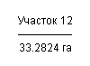
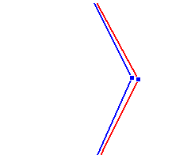

GIS MapInfo FAQ

Часть 1
Одной из основных программ, используемых в картографии, является MapInfo. Программа обладает как минусами, так и плюсами, но сейчас я не буду на них останавливаться. Просто примем как данность, что MapInfo широко используется и большое количество людей ежедневно задается вопросом «а как сделать то или это».
В принципе, программа обладает развитой справкой, в которой можно найти ответ на почти любой ПРАВИЛЬНО заданный вопрос. Однако, умение правильно задать вопрос приходит далеко не сразу. На первых порах большинство пользователей сталкиваются с проблемами, связанными, во-первых, с недопониманием идеологии ГИС-программы, во-вторых – с незнанием функциональных возможностей MapInfo. Такие или подобного уровня проблемы в других программных продуктах(AutoCad, CorelDRAW, etc.) решаются обилием книг серии «Что-то там для чайников». При всем их, зачастую, невысоком качестве, они решают основную проблему начинающего пользователя - снимают большую часть «глупых» вопросов.
Для MapInfo таких книг нет, или, по крайней мере, я не встречал. Ни официальных, ни «самодеятельных». Официальный представитель MapInfo в России, фирма «ЭСТИ МАП», на вопросы о вероятности выпуска некого учебника по программе туманно отмалчивается.
Приходится закрывать эту лакуну самостоятельно.
За время работы с MapInfo и поддержки пользователей в разных организациях у меня вырисовался круг вопросов, которые задают новички чаще всего. В данной статье я попробую просуммировать эти вопросы и составить небольшой FAQ по Mapinfo.
Сразу оговорюсь, что вариантов решений задаваемых вопросов может быть несколько, но я буду давать лишь один, на мой взгляд, самый эффективный.
Итак, приступим.
UPD: Вторая часть FAQ по ГИС MapInfo здесь.
GIS MapInfo FAQ
- Я рисую, а у меня ничего не появляется.
- Панель инструментов постоянно куда-то «улетает».
- Как импортировать точки из текстового файла?
- Как построить полигон/полилинию по существующим точкам?
- Что за серые строки в окне списка?
- Как расцепить/сцепить точки смежных объектов?
- Почему опции в меню «Объекты» серые?
- Чем отличаются опции из меню «Объекты» и из меню «Таблица»?
- Надоело каждый раз указывать проекцию.
- Как узнать текущую проекцию?
- Как сцепить все смежные точки объектов?
- Как сделать полигон с «дыркой»?
- Как узнать количество всех объектов?
- Как посчитать площадь/длину объектов?
- Как соединить/разъединить таблицы?
- Как быстро сделать слой редактируемым?
- Как увидеть все узлы объекта?
- Как добавить/удалить узел объекта?
- Как выбрать объекты, лежащие друг под другом?
- Быстрое создание полигонов.
- Постоянно выбирается верхний слой. Как избавиться?
- Как включить линейки прокрутки?
- Как показать только часть карты?
- Почему не обновляется колонка?
- Как выбрать все линии (полигоны, текст, символы)?
- Рабочий набор не открывается. Что делать?
- Как автоматически пронумеровать объекты?
- Почему не виден растр?
- Почему при перемещении объект искажается?
- При экспорте окна сохраняется только видимая часть карты, а мне нужна вся.
- Как узнать границы растра в окне привязки?
- Как проще привязать растр?
- Как присоединить фотографию к объекту?
- Что лучше – надпись или подпись?
- Какие файлы надо копировать, чтобы передать заказчику?
- Как узнать координаты вершин полигона?
- Как отсортировать записи в таблице?
- Почему программа пишет, что таблица уже открыта?
- Как сделать подпись в несколько строк?
- Я пытаюсь перенести объект, а он увеличивается!
- Как узнать координаты курсора?
- Как выбрать все точки внутри полигона?
- Не удаляется полигон!
- Как подписать объект из нескольких колонок?
- При обновлении колонки пишет в ячейки "FF"
- Как проверить карту на ошибки?
- Я открываю, а на карте ничего нет. Как это?
- В отчете слишком много листов. Можно установить их количество?
- Где можно почитать о MapInfo?
- Где скачать программы для MapInfo?
Я рисую, а у меня ничего не появляется.
Вариант 1. Ни один слой не является редактируемым.
Правый клик по полю карты открывает контекстное меню. Выбираем «Управление слоями». В списке открытых слоев выбираем чек в колонке с изображением карандаша напротив требуемого слоя. Жмем OK.
Вариант 2. Редактируемый объект находится за пределами границ рабочей области.
Т.е., к примеру, в слое указаны размеры координатной системы по X от 0 до 1000 метров, а объект располагается на отметке 5000. Одним из проявлений этой проблемы является обрыв и строго горизонтальное либо вертикальное расположение объекта по завершении редактирования — часть объекта находится в границах рабочей области, часть вышла за них и спроецирована на линию границы.
Необходимо изменить границы рабочей области. Самый простой способ – сделать копию файла. Идем в меню: «Файл» → «Сохранить копию». Если у нас загружено несколько таблиц, в открывшемся окне указываем – какую именно карту будем сохранять, и нажимаем «Новое имя».
В появившемся окне выбора имени файла, в правом нижнем углу, находим кнопку «Проекции».
В окне выбора проекции указываем требуемую проекцию (наиболее распространено План-схема, метры) и в следующем окне уже можем вводить новые координаты границы рабочей области.
Обратите внимание, что копия таблицы будет сохранена на диск, но не откроется автоматически.
Вариант 3. При использовании растровой подложки и рисовании в косметическом слое границы рабочей области косметического слоя устанавливаются по границам последнего загруженного растра.
Сохраните косметический слой или создайте новый в соответствии с рекомендациями, приведенными выше, следя за тем, чтобы граничные координаты рабочей области захватывали все растровые подложки.
Панель инструментов постоянно куда-то «улетает».
Перетащите Панели Инструментов на их законное место. Сделайте правый клик мышкой по Панели Инструментов. В появившемся окне выберите чек «Запомнить».
Как импортировать точки из текстового файла?
Для начала текстовый файл должен отвечать следующим критериям: содержать форматированный текст (т.е. поля должны быть разделены неким символом-разделителем, лучше всего – табуляцией) и разделителем целой и дробной части координаты должна выступать точка. Расширение файла должно быть txt или csv:
Далее открываем текстовый файл в MapInfo (в окне выбора файла указываем тип ASCII или csv). В окне диалога импорта указываем символ-разделитель (несколько символов-разделителей подряд обрабатываются как один) и наличие строки заголовка. Обратите внимание: если в текстовом файле строка заголовка присутствует, но при импорте это не указано, построение точек будет невозможно.
В результате в MapInfo открывается окно списка с данными. Для построения точек идем в меню «Таблица» → «Создать точечные объекты».
В окне диалога «Создать точечные объекты» указываем:
¤ Создать точки в таблице – указываем имя требуемой таблицы. Несмотря на открытый в MapInfo текстовый файл, точечные объекты будут созданы именно в той таблице, которую Вы укажите.
¤ Извлечь координаты … – указываем колонки с координатами X и Y.
¤ Координату умножить на … – в случае необходимости производим арифметические операции с координатами.
¤ Переписать существующие точки – при выборе этой опции точки с совпадающими именами будут переписаны, при отказе – добавлены в конец файла.
¤ Проекция – в случае нового файла указываем проекцию и границы рабочей области.
После нажатия кнопки ОК точки созданы. Однако окно карты пока что неактивно. Для визуализации карты идем в меню «Окно» → «Новая карта» и в открывшемся окне указываем слои карты, которые хотим показать.
Как построить полигон/полилинию по существующим точкам?
Выделяем точки, по которым требуется построить объект, следим за тем, чтобы слой, на который хотим поместить объект, был редактируемым, идем в меню «Объекты» → «Оконтурить объекты». В открывшемся диалоговом окне выбираем опцию «Создать один контур для всех объектов».
Обратите внимание, что этот способ создает полигон по крайним точкам выборки. Таким образом, создание полилинии или сложного полигона требует дополнительного ручного редактирования.
Что за серые строки в окне списка?
Эти?
«Серые» строки в окне списка появляются при удалении объектов. Т.е. объект удален, но только визуально, в базе данных он по прежнему содержится(и может, кстати, быть извлечен!). Для того, чтобы окончательно удалить запись, надо упаковать данные: меню «Таблица» → «Изменить» →«Упаковать».
В диалоговом окне указываем, какую таблицу и какой тип данных необходимо упаковать (табличные данные, графику или и то, и другое) и нажимаем ОК.
Обратите внимание – после выполнения упаковки окажутся закрытыми все связанные списки, а в окнах карты удалится слой таблицы. Для восстановления визуализации необходимо либо добавить нужное окно через меню «Окно» → «Новая карта» \ «Новый список» или воспользоваться менеджером слоев (в окне существующей карты).
Как расцепить/сцепить точки смежных объектов?
Если нужно, чтобы узлы смежных объектов обрабатывались раздельно (или, наоборот, вместе),необходимо изменить настройку режимов карты. Идем в опцию меню «Настройки» →«Режимы».
В открывшемся диалоговом окне выбираем категорию «Окно Карты» и выбираем опцию «Совмещать при перемещении»:
Результат при выборе той или иной опции будет следующим:
| Исходный вариант | При совмещении | Без совмещения |
 |
Почему опции в меню «Объекты» серые?
«Серые» (неактивные) пункты меню означают, что данные опции недоступны. Для того, чтобы использовать эти функции, необходимо:
- сделать слой редактируемым;
- выбрать редактируемый объект;
- сделать его изменяемым.
Для того, чтобы сделать объект изменяемым, идем в меню «Объекты» →«Выбрать изменяемый объект». Если все сделано правильно, объект изменит стиль выделения.
После того, как выбран изменяемый объект, необходимо выбрать объект, по которому будут производится изменения. Пункты меню станут активными. Для приведенного выше примера будут доступны такие действия, как:
- Разрезать – разделит изменяемый объект на 2 смежных по границе с выделенным;
- Удалить часть – удалит попадающую в зону перекрытия часть изменяемого объекта;
- Удалить внешнюю часть – удалит не попадающую в зону перекрытия часть изменяемого объекта.
Для того, чтобы снять изменяемость с объекта, необходимо выполнить команду «Объекты»→ «Освободить изменяемый объект»
Чем отличаются опции из меню «Объекты» и из меню «Таблица»?
Действительно, в версии MapInfo старше 8.0 в пунктах меню «Объекты» и «Таблица»3 команды имеют одинаковое название: «Буферные зоны», «Полигоны Вороного» и «Зоны транспортной доступности». Различие их вытекает из названий родительского меню. Команды из меню «Объекты» применимы для выделенных объектов, а команды из меню «Таблица» – для всех объектов указанной таблицы.
Надоело каждый раз указывать проекцию.
Для того, чтобы каждый раз при создании новой таблицы и при импорте точечных объектов не указывать одну и ту же проекцию, необходимо настроить значения проекций по умолчанию. Делается это в меню «Настройка» → «Режимы» → «Окно карты» → «Проекции по умолчанию».
Также по умолчанию можно настроить и пути сохранения таблиц и рабочих наборов: «Настройка»→ «Режимы» → «Каталоги».
Как узнать текущую проекцию?
Необходимо различать проекцию текущего окна карты и исходную проекцию таблицы. Изменить проекцию таблицы можно только пересохранив ее под другим именем в нужной проекции. В то же время достаточно легко изменить проекцию окна карты: меню «Карта» → «Режимы», опция «Проекция». Данное изменение будет действовать только для текущего сета работы и не сохраняется в файл при закрытии.
Внимание! Если в рабочем наборе открыто несколько таблиц с разными проекциями, окно карты примет проекцию последней открытой таблицы и распространит принципы и геометрию этой проекции на все остальные слои.
Чтобы узнать исходную проекцию таблицы, выбираем «Таблица» → «Изменить» →«Перестроить» → «Проекция».
Выполнять это действие можно безбоязненно, т.к. программа все равно не позволит изменить проекцию открытой таблицы.
Как сцепить все смежные точки объектов?
Если требуется сцепить смежные точки существующих объектов, можно воспользоваться инструментом «Совмещение и генерализация» (меню «Объекты»).
К примеру, имеется 2 полигона, для которых необходимо создать общую границу:
Выделяем объекты, в диалоговом окне инструмента выставляем чек «Совмещение узлов разных объектов» и в поле «Расстояние» вводим радиус захвата смежных узлов (чем радиус больше, тем больше узлов будут совмещены в один и тем больше, как следствие, искажение объекта). Нажимаем ОК.
Результат работы инструмента:
Кстати, использование этого инструмента имеет довольно интересное следствие, которое можно использовать. Например, есть два перекрывающихся объекта:

Выделяем объекты, вызываем инструмент «Совмещение…» и в поле «Расстояние» указываем 0. После чего выполняем раскомбинирование объектов («Объекты» →«Разъединить») и получаем:
Для наглядности полученные объекты перемещены относительно друг друга:
Как сделать полигон с «дыркой»?
Для того, чтобы создать полигон с вырезанной площадью (полигон с «дыркой»), необходимо:
- Создать контур внешнего полигона.
- Создать контур внутреннего полигона.
- Выделить (выбрать) внешний полигон.
- Сделать внешний полигон изменяемым (меню «Объекты» → «Выбрать изменяемый полигон»)
- Выделить (выбрать) внутренний полигон.
- Удалить часть полигона («Объекты» → «Удалить часть»)
- Удалить внутренний полигон.
Как узнать количество всех объектов?
Для того, чтобы узнать количество всех объектов в таблице, нужно воспользоваться командой «Статистика». Идем в меню «Запрос» → «Статистика колонки», в открывшемся диалоговом окне указываем таблицу, по которой необходимо рассчитать статистику.

Нажимаем ОК. В окне «Статистика колонки» находим позицию «Количество» – это и будет требуемая информация.
Как посчитать площадь/длину объектов?
Напрямую узнать площадь/длину всех объектов таблицы нельзя. Для того, чтобы получить эту информацию, необходимо выполнить несколько промежуточных действий.
В данном примере мы вычислим площадь всех кадастровых участков:
Для начала нам необходимо подготовить нашу таблицу для записи получаемой информации (в данном случае – площади). Для этого мы вызываем диалог «Перестройка структуры таблицы» (опции меню «Таблица» → «Изменить» →«Перестроить», в окне выбора указываем, какую таблицу собираемся изменять).
В открывшимся окне, используя кнопки «Добавить поле» добавляем поле, в которое будем записывать площадь по каждому из участков. Обратите внимание: для численных данных (площадь, длина, количество и т.д.) тип поля должен быть либо «Целое» (данные округлятся до целого числа), либо «Вещественное» – наиболее часто используемый тип поля, либо «Десятичное». В последнем случае можно (и нужно!) указать количество разрядов десятичного числа. Использование остальных типов полей для занесения числовых значений, скорее всего, вызовет ошибку.
В нашем примере мы создаем поле «Area» и присваиваем ему тип «Вещественное». После нажатия кнопки ОК изменяемая таблица исчезнет из открытых окон карты и списков.
Таким образом, поле для занесения информации подготовлено. Теперь надо это поле заполнить. Делается это так: меню «Таблица» → «Обновить колонку», и в открывшемся диалоговом окне заполняем поля следующим образом:
Обновить таблицу – указываем, в какую таблицу будем записывать данные;
Обновить колонку – указываем имя созданного нами поля;
Значения извлечь из – в данном случае, т.к. работаем с одной таблицей, дублируем имя изменяемой таблицы;
Значение – тут самая хитрость. Для составления формулы заполнения ячеек поля необходимо либо воспользоваться конструктором выражений (кнопка «Составить»), либо вручную записать: для вычисления площади «Area(obj, "sq m")», для вычисления длины объектов – «ObjectLen(obj, "m")». Обратите внимание, что по умолчанию конструктор выражений предлагает единицы вычисления километры ("km"). Для вычисления, к примеру, в метрах необходимо исправить выражение вручную.
После нажатия кнопки ОК в открывшимся окне списка мы увидим, что колонка «Area» заполнилась значениями площади по каждому объекту.
Теперь, для того чтобы просуммировать данные по колонке, достаточно просто зайти в окно статистики(меню «Запрос» → «Статистика колонки», указав нужную таблицу и колонку для вычисления) и в поле «Сумма» будет указана, в нашем случае – общая площадь всех участков.
Как соединить/разъединить таблицы?
Собственно, соединить таблицы (выборки) несложно. Достаточно выполнить команду меню «Таблица»→ «Добавить записи в таблицу», в диалоговом окне указать таблицу-источник и таблицу-получателя и после нажатия кнопки ОК данные таблицы-источника добавятся в конец таблицы-получателя.
Разъединяются таблицы по несколько иному сценарию. В исходной таблице, содержащей объединенные данные, определяются и выделяются объекты для сохранения в файл. После чего выборка сохраняется: меню «Файл»→ «Сохранить копию». В окне «Создать копию» выбираем слой Selection или Query (последний представляет из себя выборку, сформированную запросом и различается порядковым номером: Query1, Query2, Query3 и т.д.).
После нажатия кнопки «Новое имя» откроется стандартный диалог сохранения файла MapInfo.
Операция «выделить объекты – сохранить копию» повторяется столько раз, сколько необходимо создать файлов.
Как быстро сделать слой редактируемым?
Для того, чтобы сделать слой редактируемым, необязательно каждый раз вызывать менеджер слоев. Внизу окна MapInfo расположена строка состояния. Третья слева вкладка отображает название выбранного слоя, а вторая слева отображает название текущего редактируемого. При левом клике мышью по нему откроется список всех слоев. Выбрав требуемый, вы сделаете его редактируемым.
Как увидеть все узлы объекта?
Увидеть узлы объекта можно 2 способами.
Вариант 1. Сделать слой редактируемым, выделить объект и включить режим «Узлы» на панели инструментов. При этом варианте видимость узлов присваивается только для выделенного объекта и сбрасывается при снятии выделения.
Вариант 2. Правым кликом по полю карты или соответствующей кнопкой на панели инструментов вызвать окно «Управление слоями». В этом окне выделить слой, для которого требуется показать узлы и либо двойным кликом по названию слоя в списке, либо нажав кнопку «Оформление», вызвать диалоговое окно «Оформление».
Отметив опцию «Показ узлов» мы добьемся следующего эффекта:
| Без показа узлов | Показ узлов |
Обратите внимание – при варианте 2 узлы только отображаются, но не редактируемы.
Как добавить/удалить узел объекта?
Для добавления/удаления и, вообще, редактирования узлов объекта необходимо выполнить следующие действия:
- Сделать слой редактируемым
- Выделить редактируемый объект
- Включить режим редактирования узлов
- Левым кликом мыши выделить редактируемый узел.
В режиме редактирования узлов доступны следующие действия:
- Перемещение узла (удерживая нажатой левую кнопку мыши)
- Удаление узла (клавиши DELETE и BACKSPACE)
- Добавление узла (выделенная кнопка на панели инструментов)
Для удаления/перемещения узлов поддерживается мультивыделение. Для выделения нескольких узлов используйте клавишу SHIFT. При включенном режиме совмещения узлов(клавиша S) и при попадании добавляемого узла в зону совмещения новый узел будет «притянут» к существующему.
Как выбрать объекты, лежащие друг под другом?
Используйте при выделении клавишу CTRL. Перекрывающиеся объекты будут выбираться циклически, начиная с самого верхнего.
Быстрое создание полигонов.
Несколько советов:
Используйте режим совмещения узлов (клавиша S в латинской раскладке клавиатуры).
Используйте при создании объекта режим дигитайзера:
- клавиша D (в латинской раскладке клавиатуры) включает режим.
- выбор 2 точек существующего объекта при нажатой клавише SHIFT обходит новым объектом все узлы существующего по кратчайшей траектории;
- выбор 2 точек существующего объекта при нажатой клавише CTRL обходит новым объектом все узлы существующего по наибольшей траектории.
| SHIFT | CTRL |
Используйте инструменты работы с объектами (слияние, разрезание, удаление части и создание буферных зон) для получения промежуточных (или конечных объектов). Комбинирование промежуточных объектов зачастую, а особенно для объектов с большим количеством узлов, рациональнее создания их «с нуля».
Постоянно выбирается верхний слой. Как избавиться?
Отключите его доступность. В окне «Управление слоями» выделите в списке нужный слой и снимите выделения с колонки «Доступность».
Слой останется видимым, но его объекты нельзя будет выбрать.
Как включить линейки прокрутки?
По умолчанию линейки прокрутки в окне карты MapInfo отключены. Для того, чтобы включить линейки прокрутки для текущего сеанса работы, необходимо зайти в меню «Карта» →«Режимы» и включить опцию «Линейки прокрутки».
Для того, чтобы включить показ линеек прокрутки по умолчанию надо зайти в меню «Настройки»→ «Режимы» → «Окно Карты» и включить опцию «Линейки прокрутки».
Как показать только часть карты?
Вариант 1. Сделать объекты, которые надо скрыть, невидимыми. Для этого выберите объекты, вызовите их свойства (клавиша F7 или соответствующая кнопка панели инструментов) и в поле типа заливки/линии/символа выберите «N». Например, так:
Вариант 2. Сделать слой-«маску». Создайте новый слой, в нем создайте, к примеру, прямоугольник с размерами, несколько превышающими границы всех объектов – собственно, маску. Следом создайте контур видимости – полигон, внутрь которого попадают отображаемые объекты. Удалите часть по контуру видимости из маски (выделить прямоугольник, клавиши CTRL+E, выделить контур, меню «Объекты»→ «Удалить часть»), удалите сам контур видимости. В свойствах объекта или в оформлении слоя установите для региона следующие характеристики:
Сохраните получившийся слой и установите его верхним в менеджере слоев (клавиши CTRL+L). Если требуется, снимите доступность с слоя (колонка с изображением указателя).
Вариант 3. Использовать область врезки. Выберите все объекты, которые должны быть отображены или создайте окаймляющий полигон в, например, косметическом слое(очень удобно для этих целей использовать команду «Объекты» →«Оконтурить объекты») и выделите его. В меню «Карта» выберите опцию «Выбрать область врезки». Для включения режима невидимости используйте команду «Показать врезку», для снятия, соответственно – «Скрыть врезку».
Обратите внимание – область врезки не сохраняется в файлах данных. Таким образом, для последующего использования врезки ее необходимо сохранять в Рабочий набор.
Почему не обновляется колонка?
Если при обновлении колонки программа выдает сообщение «Преобразовать данные не удалось» и обновляемая колонка не изменяется, то причина, скорее всего, в несоответствии типов данных. Т.е., к примеру, колонка-источник имеет тип данных «Символьное», а колонка-получатель – «Целое».
Лучше всего, если обе колонки, и источник, и получатель, будут иметь один тип данных. Но в то же время возможны следующие переходы:
- Любой тип – в символьное;
- Любое число – в логическое (значения T (истина) <> 0 или F (ложь) = 0);
- Любое число – в любое число (с потерями по разрядам).
Кстати, последнюю особенность можно использовать, когда требуется, к примеру, получить округленные данные – записывать дробные числа в поле целого типа.
Как выбрать все линии (полигоны, текст, символы)?
Для того чтобы выбрать объекты одного типа, необходимо воспользоваться функцией STR()языка запросов.
Откройте конструктор запросов MapInfo (меню «Запрос» → «Выбрать»)и, указав таблицу, в которой будет произведен поиск, введите в поле условия следующие конструкции:
| Str$(obj)="region" | для выбора полигонов |
| Str$(obj)="point" | для выбора точек |
| Str$(obj)="line" | для выбора линий |
| Str$(obj)="polyline" | для выбора полилиний |
| Str$(obj)="text" | для выбора текста |
| Str$(obj)="arc" | для выбора дуг |
| Str$(obj)=" ellipse" | для выбора окружностей |
| Str$(obj)="rect" | для выбора прямоугольников |
| Str$(obj)="roundrect" | для выбора скругленных прямоугольников |
Эти конструкции сочетаются как друг с другом, так и с другими конструкциями. Например, запрос типа
Str$(obj)="region" And Area(obj, "sq m")>2000 выберет из таблицы все полигоны площадью большей чем 2000 кв. м.
Рабочий набор не открывается. Что делать?
Для того, чтобы сказать, почему не открывается рабочий набор, надо знать, какое сообщение выдает при этом программа. Я попробую перечислить самые частые проблемы:
1. Сообщение об ошибке типа:
Причина. Подобное сообщение выводится если рабочий набор подготовлен в более поздней версии MapInfo, нежели используемая.
Решение. Откройте рабочий набор при помощи любого текстового редактора (например, «Блокнота»). 2-ая строка будет иметь вид:
!Version 900
Т.е. набор подготовлен в версии MapInfo 9.0. Исправьте версию на текущую или более низкую, например, так:
!Version 550
Сохраните файл и откройте рабочий набор снова.
2. При попытке открыть рабочий набор появляется диалоговое окно выбора файла с предложением указать путь к некой таблице.
Причина. В рабочем наборе прописан неверный путь к файлу.
Решение. Укажите путь к файлу в открывшемся окне выбора файла ;) ! Если у Вас такого файла нет, укажите любой другой файл (желательно не из числа уже открываемых в наборе). Потом, после открытия набора, этот файл можно будет удалить (меню «Файл» → «Закрыть таблицу»).
Обратите внимание! Пути в рабочем наборе могут быть как абсолютные (полный путь, включая буквы диска), так и относительные. Если все файлы рабочего набора расположены в том же каталоге, что и сам набор, либо ниже – пути пропишутся как относительные. Такой рабочий набор можно безбоязненно переносить из каталога в каталог (с файлами таблиц, естественно), не опасаясь. Если же возникнет необходимость отредактировать пути к файлам рабочего набора вручную, это можно сделать также в любом текстовом редакторе. Редактируются строки вида:
Open Table "sample" As sample Interactive
3. Сообщение об ошибке типа:
Причина. Изменена структура файла данных, открываемого в рабочем наборе.
Решение. В строке сообщения, после имени рабочего набора, указывается цифра – номер строки рабочего набора, на которой произошла ошибка. Откройте рабочий набор в текстовым редакторе и перейдете к указанной строке. Закомментируйте ее (поставьте знак апострофа первым символом в строке). Например, так:
' Visibility On
Сохраните файл и попробуйте открыть рабочий набор снова. Если сообщение об ошибке не исчезло, закомментируйте предыдущую строку, и так далее, пока сообщение не перестанет появляться. В конечном итоге у Вас должно получится что-то вроде:
' With Num ' Parallel On Auto On Overlap Off Duplicates On Offset 2 ' Visibility On
Именно строка "With Num" и была ошибочной – колонки Num в открываемой таблице не существовало.
Как автоматически пронумеровать объекты?
Для того, чтобы автоматически пронумеровать все объекты в таблице (выборке), можно воспользоваться функцией RowId.
Вызовите диалоговое окно обновления колонки («Таблица» → «Обновить колонку»), в полях «Обновить таблицу» и «Значения извлечь из» укажите имя рабочей таблицы, в поле «Обновить колонку» укажите имя колонки, в которую надо записать полученные данные. В поле значение впишите имя функции RowId. Функцию можно комбинировать с арифметическими действиями, например, так:
RowId + 1000
Указанная конструкция пропишет номера объектов по порядку, типа 1001, 1002, 1003 и т.д.
Если Вы не хотите, чтобы по результатам обновления открывалось новое окно списка, снимите выделение с опции «Результат в Список».
Почему не виден растр?
Скорее всего, потому что включена опция генерализации карты.
Откройте менеджер слоев и, либо двойным щелчком по слою растра, либо нажатием на кнопку «Оформление» (предварительно выбрав слой растра), откройте диалоговое окно оформления слоя.
Снимите выделение с опции «Масштабный эффект» → «Показывать в пределах». Теперь растр в окне карты будет отображаться при любом масштабе.
Что делать если таких подгруженных растров много? Сохраните рабочий набор (меню «Файл» →«Сохранить рабочий набор») и откройте его в текстовом редакторе (например, в «Блокноте»).Найдите конструкцию типа:
Zoom (…, …) Units "m" Off contrast 50 brightness 50 alpha 255 transparency off color 0 grayscale off
и удалите признак "Off" из команды Zoom. Т.е. должно получится:
Zoom (…, …) Units "m"
Почему при перемещении объект искажается?
Наиболее вероятная причина трансформации объектов при перемещении – неверно выбранная проекция таблицы. Если при создании таблицы была выбрана любая сферическая проекция (как наиболее типичный пример «Долгота/Широта»), то и все геометрические построения будут производиться также – на сфере. Наименее подверженной искажениям является проекция «План-схема».
Также надо учитывать, что необязательно сама редактируемая таблица создана в сферической проекции. Если один из загруженных в окно карты слоев (чаще всего – последний загруженный) имеет проекцию, к примеру, «Долгота/Широта», то и все окно карты может принять эту проекцию.
Узнать проекцию текущего окна карты можно из окна «Режимы окна Карты» (меню «Карта» → «Режимы»), опция «Проекции».
Также одной из причин искажений объектов карты могут быть слишком широко заданные границы рабочей области таблицы. Известная особенность MapInfo – чем больше диапазон минимума и максимума координат рабочей области, тем ниже точность вычисления по этому слою. Старайтесь задавать граничные координаты с минимальным допуском.
При экспорте окна сохраняется только видимая часть карты, а мне нужна вся.
Чтобы экспортировать в растр всю карту в нужном масштабе, а не только ее видимую в окне Карты часть, воспользуйтесь возможностями Отчета.
Для создания нового отчета выберите пункт меню «Окно» → «Новый отчет». В появившимся диалоговом окне выберите опцию «Чистый лист».
После нажатия кнопки ОК появится окно отчета. Размер листа отчета зависит от настроек печати (меню «Настройки» → «Режимы» → «Принтер», опция «Предпочтительный для MapInfo» — настройки по умолчанию или меню «Файл»→ «Настройки печати» — для текущего сеанса работы).
Используя инструмент «Рамка» панели инструментов Отчета рисуем прямоугольник произвольных размеров. Появится окно настройки фрейма (рамки).
Подбирая параметры (повторно окно настройки фрейма вызывается либо двойным кликом по полю фрейма, либо нажатием клавиши F7), добиваемся наилучшего вида и расположения карты в окне:
| Опция | Назначение |
| Окно | В выпадающем списке выбирается окно - источник данных (в нашем случае – карта) |
|
Границы Центр Высота Ширина |
Указываются граничные координаты фрейма и его размеры. Отсчет начинается от левого верхнего угла отчета. Единицы измерения выставляются в: «Настройки» → «Режимы» → «Системные» → «Единицы измерения», опция «Для отчета»). |
| Масштаб | Указывается требуемый масштаб |
| Изменять масштаб карты | При выбранной опции масштаб окна карты будет меняться в зависимости от проставленного выше значения при сохранении размеров фрейма. |
| Изменять размер рамки | При выбранной опции масштаб окна карты будет неизменным. Изменятся будет размер фрейма в зависимости от проставленного выше значения масштаба. |
Также на объект фрейм распространяются настройки вида (аналогично полигону). Т.е. можно, к примеру, сделать невидимой рамку фрейма.
Если оказалось, что размеры фрейма превышают размеры листа, то можно либо изменить настройки печати, либо изменить количество листов (меню «Отчет» → «Режимы показа», опция «Размер отчета»), либо вообще ничего не предпринимать. Для экспорта окна это некритично.
После настройки окна отчета его уже можно экспортировать «Файл» → «Экспортировать окно»)точно также, как и окно Карты (и любое другое окно MapInfo).
Как узнать границы растра в окне привязки?
При регистрации растра периодически возникает необходимость указать граничные координаты изображения (левый верхний угол, правый верхний и т.д.). Попасть же курсором точно в край изображения довольно сложно. Вместе с тем можно ввести эти данные вручную.
Выделите точку привязки в списке (или создайте новую) и нажмите «Правка». В открывшемся диалоговом окне отредактируйте поля «X на растре» и «Y на растре»:
— левый верхний угол – X= 0, Y= 0;
— правый верхний угол – X= ширина изображения в пикселях, Y= 0;
— правый нижний угол – X= ширина изображения в пикселях, Y= высота изображения в пикселях;
— левый нижний угол – X= ширина изображения в пикселях, Y= 0.
Размеры изображения в пикселях можно узнать, к примеру, наведя курсов на файл в окне проводника. Информация отобразится в строке состояния. Но можно поступить иначе. Введите в требуемое поле(«X/Y на растре») некую заведомо большую величину (999999999) и нажмите ОК. MapInfo выдаст сообщение об ошибке, типа «Введите число в диапазоне от 0 до n». Вот эта n и будет искомой величиной ширины/высоты растра.
Как проще привязать растр?
Если имеется карта с нанесенными объектами, по которым необходимо привязать (совместить) растр, то регистрация изображения довольна проста.
Технология следующая:
Открываем растровое изображение («Файл» → «Открыть», в поле «Тип файлов» выбираем строку «Растр»)
В диалоговом окне нажимаем кнопку «Регистрировать». Откроется окно регистрации растра.
Важно! В обязательном порядке указываем проекцию и единицы измерения привязки! По умолчанию в MapInfo выставлена проекция «Долгота/Широта» и единицы – градусы. Лучше, за исключением особых случаев, использовать плоскую СК – «План-схема». Единицы измерения выбираются в зависимости от задач: сантиметры, метры, километры и т.д.
Далее необходимо найти как в открытом окне карты, так и в поле привязки совпадающие элементы. Используйте для перемещения в окне привязки линейки прокрутки и кнопки масштабирования. Переход между окнами (карты и регистрации) осуществляется просто перемещением курсора в требуемое окно.
После того, как совпадающие элементы визуально определены, остается совместить координаты карты и изображения. Можно пойти 2 путями:
- Нажимаем на кнопку окна регистрации «Извлечь из карты». Курсор принимает вид маленького крестика. Наводимся на объект в окне карты и щелкаем по нему. Ничего не меняя в появившемся окне, жмем ОК. После этого, выделив появившуюся запись в списке точек привязки, наводимся на соответствующий объект в поле привязки и щелкаем еще раз. На объекте появится красный символ с номером точки. Повторяем процедуру не менее 3 раз, используя кнопку «Добавить» окна регистрации (при 3 точках привязки изображение регистрируется, при большем их количестве также возможно вычисление погрешности привязки).
- Наводимся на объект в поле привязки и щелкаем по нему. Ничего не меняя в появившемся окне, жмем ОК. После этого, выделив появившуюся запись в списке точек привязки, переходим в окно карты: меню «Таблица» → «Растр» → «Совместить с картой». Наводимся на соответствующий объект в окне карты и щелкаем по нему. Повторяем процедуру не менее 3 раз, используя кнопку «Добавить» окна регистрации растра.
Растр привязан.
Как присоединить фотографию к объекту?
Для того, чтобы присоединить фотографию к некому объекту, необходимо воспользоваться инструментом«Геолинк» .
Но для начала необходимо соответствующим образом подготовить данные. Т.к. геолинк представляет собой, по сути, ссылку (текстовую строку с данными, в нашем случае – путь и имя фотографии), требуется создать поле таблицы, ячейки которого будут содержать эти ссылки.
Идем в меню «Таблица» → «Изменить» → «Перестроить». Выбираем нужную таблицу и в открывшемся диалоговом окне создаем новое поле (кнопка «Добавить») с типом Char (Символьное). Необходимо также изменить поле «Знаков», т.е. длину строки — максимальное количество символов, которое может поместиться в ячейке. Нажимаем ОК.
Обратите внимание! После изменения структуры таблицы она (таблица) исчезает из всех представлений (окна карты, списка). Для восстановления визуализации данных либо добавьте таблицу в существующее окно карты через Менеджер Слоев (CTRL+L, кнопка «Добавить»), либо создайте новое окно карты или списка (меню «Окно» → «Новое …»).
После того, как таблица подготовлена, можно заполнять ее данными. Данные можно ввести в ячейки как в окне списка, так и в окне карты, при помощи инструмента «Информация»
 .
.
Например, так:
После того, как все необходимые данные внесены, можно включить режим геолинка. Открываем окно «Управление слоями», выделяем необходимую таблицу в списке таблиц и нажимаем кнопку «Геолинк».
В окне настроек Геолинка указываем поле, содержащие ссылки и то, где геолинк будет активирован – либо на самих объектах, либо на их подписях, либо и там и там. Выбор чека «Размещение файла относительно таблицы» позволяет использовать относительные пути файлов (т.е. не D:\aaa\bbb\sample.bmp, а просто sample.bmp, при условии, что сама таблица также находится в том же каталоге, что и линкуемые данные).
Чтобы при каждом открытии таблицы не настраивать Геолинк заново, выберите чек «Сохранять настройки в разделе метаданных таблицы».
Настроив Геолинк, можно приступать к испытаниям. На Панели инструментов выбираем , щелкаем им по объекту и в новом окне откроется требуемое изображение.
Собственно, каким же образом можно линковать не только фотографии, но и любые другие данные: документы, таблицы, запросы и т.д. – все, что пожелаете.
Что лучше – надпись или подпись?
Разница между надписью и подписью, если кратко, заключается в том, что надпись – это объект, а подпись – это визуализация одной из характеристик объекта.
Чуть более развернуто.
Надпись, та что создается инструментом «Текст» – точно такой же объект, как и символ, линия или регион. При добавлении надписи на слой карты в таблице (окно «Список») появляется новая запись, при удалении надписи информация теряется безвозвратно (команду «Отменить» здесь не рассматриваем).
Подпись же – это текстовое представление той или иной информации об объекте: данные по одной или нескольким колонкам семантики объекта, его характеристика (длина, площадь, цвет) и пр. При удалении подписи из представления (окно «Карта») информация не пропадаем и ее всегда можно восстановить, перезагрузив таблицу или воспользовавшись инструментом «Подпись»
Одним из немаловажных моментов практического применения является то, что надпись при масштабировании окна карты не меняет своих размеров, а подпись не меняет размеров шрифта. Т.е. если мы вдвое уменьшим масштаб карты (1:1000 → 1:2000), то надпись также уменьшится 2 раза, а подпись останется неизменной.
Кроме того, большое количество объектов (надпись – объект!) существенно «затормаживает» прорисовку карты. Подписи же практически не влияют на скорость. При больших объемах данных это может оказаться очень существенно.
Основным же доводом «за» более широкое использование подписей является то, что подпись более технологична. При нанесении 1 надписи и 1 подписи время, затраченное на формирование подписи, будет, пожалуй, существенно большим (подготовить структуру таблицы, перезагрузить ее, внести данные и оформить визуализацию). Однако, при возрастании объемов, время, затраченное на нанесение надписей, увеличивается линейно: (время затраченное на нанесение 1 надписи) * (количество надписей). Для подписей же ситуация меняется незначительно: (время на подготовку таблицы) + (время на визуализацию подписей) + (время на формирование данных). К тому же, при формировании подписей можно применять выражения и запросы, что, при подготовленной таблице, сводит процесс подписывания всего слоя к минимуму.
Оба метода подписывания (или надписывания) объектов применяются, однако надо всегда четко представлять, какой из них в данной ситуации будет эффективнее.
Какие файлы надо копировать, чтобы передать заказчику?
В общем случае эти файлы можно разбить на 3 категории:
- файлы данных
- файлы рабочих наборов (файлы настроек отображения информации)
- файлы поддержки
Файлы данных – это, собственно, и есть сами файлы с графической и семантической информацией. Попробуем кратко описать основные форматы файлов данных и их комбинации.
- *.TAB – обязательный файл MapInfo. Текстовый файл, ASCII формат, содержит описание таблицы данных.
- *.DAT – бинарный файл, содержит семантическую информацию.
- *.MAP – бинарный файл, содержит графическую (векторную) информацию.
- *.ID – файл ссылок, связка между семантикой и графикой.
- *.IDX – файл индексов, необязательный.
Таким образом, стандартный набор файлов некой таблицы MapInfo содержит 4 или 5 файлов. Однако, если в таблице отсутствует графическая информация, файлы с расширениями *.MAP и *.ID не создаются.
Также возможны варианты с файлом *.DAT. Если данные загружались в MapInfo из внешнего файла(текстовый файл, файл Excel, растровое изображение или поверхность и т.д.), вместо файла с расширением *.DAT будет исходный внешний файл (*.txt, *.xls, *. *.tif, *.jpg, *.grd и т.д.).
В случае присоединения Базы Данных Access к набору еще добавится файл *.AID.
Файлы рабочих наборов (файлы настроек отображения информации). Здесь все просто– это файлы с расширением *.WOR. Единственно, что проверьте перед передачей рабочих наборов – все ли пути в файле прописаны как относительные?
Файлы поддержки – это файлы, которые использует программа (MapInfo) для корректного отображения информации и которых может не быть на стороннем компьютере. Их также вида: файлы стилей линий, файлы стилей заливки и шрифты.
Если вы используете модифицированные стили линий или заливок(стандартные довольно убоги и часто дорабатываются при помощи соответствующих программ), обязательно приложите и их:
- {Program Files}\MapInfo\Professional\XXX\MSRES{..}.DLL – заливка
- Documents and Settings\{User}\Application Data\MapInfo\MapInfo\Professional\XXX\MAPINFOW.PEN – линии
Если используются нестандартные шрифты, не входящие в поставку Windows, стоит приложить и их, а также этот файл:
- Documents and Settings\{User}\Application Data\MapInfo\MapInfo\Professional\XXX\MAPINFOW.FNT – символы
Как узнать координаты вершин полигона?
Никак. Встроенного инструмента для этого в MapInfo не существует.
Можно воспользоваться одной из многочисленных утилит от сторонних разработчиков, например, из пакета RUSUTIL от компанией «ЭСТИ МАП», что поставляется вместе в дистрибьютивом русской версии MapInfo. Или более развитый инструментарий – «Инструментарий для MapInfo» от команды GT4MI. Но он платный.
Также можно использовать экспорт в обменный формат mid/mif. Файл с расширением mid содержит семантическую информацию, а с расширением mif – графическую. Выделите объект, координаты узлов которого требуется узнать, и экспортируйте (меню «Таблица» -→ »«Экспорт») таблицу Selection в «Формат обмена MapInfo (*.mif)».
Откройте файл с расширением mif в любом текстовом редакторе («Блокнот») и получите форматированный список координат узлов объекта.
Как отсортировать записи в таблице?
Впрямую отсортировать записи в таблице нельзя. Можно лишь отсортировать записи выборки.
Вызвав окно «Выбрать» из меню «Запрос» → «Выбрать», укажите таблицу, записи которой требуется отсортировать. Поле «Условие», если нет каких-либо особых показаний, можно оставлять пустым. В поле «Упорядочить по колонке» укажите колонку, по которой будет происходить сортировка (только в порядке возрастания, к сожалению). В зависимости от того, какое представление результатов выборки желаете получить (табличное или графическое), проставьте опции «Результат в список» и «Результат в карту». Еще можно изменить стандартное имя результирующей таблицы – по умолчанию Selection.
После того, как выборка сформируется, ее можно сохранить: меню «Файл» →«Сохранить копию». В диалоговом окне выбора таблицы для сохранения укажите Selection (если выделение еще не снято), либо Query с последним номером.
Если требуется отсортировать с неким сложным условием, допустим, по 2 колонкам, либо в обратном порядке, придется воспользоваться SQL-запросом из меню «Выбрать». Так, нижеприведенный пример сортирует данные из таблицы sample по колонке ID в обратном порядке:

Надо заметить, что использование языка запросов SQL существенно усиливает функционал MapInfo.
Кроме того, не следует пренебрегать и возможностью сохранять и загружать запросы – создав самостоятельно или с чьей-то помощью SQL-запрос, не обязательно его запоминать. Можно просто загрузить и использовать.
Почему программа пишет, что таблица уже открыта?
Очевидно, потому что она (таблица) открыта.
Для того, чтобы действительно ЗАКРЫТЬ таблицу, недостаточно просто щелкнуть крестик в правом верхнем углу. Так Вы закрываете только окно визуализации таблицы (нескольких таблиц). Т.е. таблица (карта или список) перестают быть видимой, но, тем не менее, остается загруженной.
Закрывает же таблицу команда «Закрыть таблицу» или «Закрыть все» (меню «Файл»). При выборе команды «Закрыть таблицу», в случае, если открытых таблиц больше одной, программа предложит выбрать – какую таблицу закрыть. Команда «Закрыть все» закрывает все открытые таблицы, видимые и невидимые, во всех открытых окнах.
Как сделать подпись в несколько строк?
При формировании выражения подписывания используйте для разделения данных по строкам функцию Chr$(n), где n – целое число.
Функция Chr (charcode) возвращает символ, соответствующий определённому коду. Код переноса строки – 10 (возврат каретки) или 13 (новая строка). Код пробела – 32. Код длинного тире – 151. И т.д.
Вот пример выражения:
"Участок "+Str$(ID)+Chr$(10)+String$(5, Chr$(151))+Chr$(10)+Area+" га"
А вот его результат:
Я пытаюсь перенести объект, а он увеличивается!
«Графиня, Вы не за то схватились!» – вскричал граф.
Скорее всего, Вы ухватили мышкой не сам объект, а один из черных квадратов, что его окружают при выделении. Именно они и отвечают за изменение размеров объекта.
В общем же случае – изменение геометрии объекта при перемещении может быть связано либо с сферической системой координат, либо с превышением границ рабочей области.
Как узнать координаты курсора?
В левом нижнем углу окна карты MapInfo, в первой панели на строке состояния по умолчанию отображается масштаб представления карты. Если щелкнуть по нему мышкой, откроется список, в котором есть опция «Положение курсора»:
Выберите ее и в этой панели будут отображается координаты перемещения курсора.
Как выбрать все точки внутри полигона?
Используйте инструмент «Выбор-в-области» на Панели Инструментов.
Щелкните по полигону этим инструментом по окаймляющему полигону и все точки, что находятся внутри него, будут выбраны. Для добавления/удаления объектов к/из выборки используйте любой инструмент выбора при нажатой клавише SHIFT.
Не удаляется полигон!
Да, такое случается. Объект (необязательно полигон, просто чаще всего подобная неприятность происходит именно с этим элементом) виден на карте, иногда его можно выделить, иногда нет и – что самое неприятное – никак нельзя удалить.
Что это? По всей видимости, это – ошибочный объект. Объект, содержащий такие ошибки топологии, что программа отказывается с ним работать. Не будем вдаваться в подробности, почему так происходит, нам надо просто его удалить.
Если этот объект выделяется – хорошо, выделим его. Если нет – хуже, но тоже не смертельно. Берем инструмент «Выбор-в-рамке» (к примеру, можно любой другой площадной инструмент выделения) и выделяем все объекты вокруг нашего, включая и его самого. Затем, удерживая нажатой клавишу SHIFT, инструментом «Выбор» (одиночный выбор) аккуратно снимаем выделение со всех объектов, кроме ошибочного.
Когда в выборке останется только один ошибочный объект, переходим в окно Списка (меню «Окно» → «Новый список» → имя таблицы с данными). Находим выделенную строку (помечена черным квадратом в начале) и жмем Delete (или «Удалить» в меню «Правка»). Выделенная строка удалится (станет серой), а с ней уйдет и неправильный объект.
Как подписать объект из нескольких колонок?
Для того, чтобы сформировать подпись объекта не из одной колонки, а из нескольких, необходимо воспользоваться опцией «Выражение» из списка «Из колонки» диалогового окна «Подписывание».
Открываем менеджер окон (CRTL+L), выделяем слой, по которому мы хотим добавить подписи, проставляем чек в «Подписывание» (изображение желтого ярлыка) и нажимаем кнопку «Подписи». При нажатии на поле с подписью «Из колонки» выпадает список доступных в данном слое колонок. Самой нижней записью будет дополнительная опция «Выражение». При выборе этой опции откроется стандартный конструктор запросов.
Пользуясь записями из списков в правой части конструктора, можно формировать выражения для подписывания объектов. Так, если надо подписать объект данными из колонки ID и Char, выражение будет следующим:
ID+Char
Однако, тут есть определенные нюансы. При формировании выражений необходимо учитывать согласованное преобразование типов данных. Так, если и колонки ID и Char имеют числовой тип данных (Integer, Float и т.д.), то результатом выше приведенной формулы будет сумма данных соответствующих ячеек: 1+2=3. Если колонки имеют символьный тип (Char), то результатом выражения уже будет слияние: "1"+"2"="12".
Если же колонки имеют разный тип данных (в примере ID – целое, Char – символьное), то при нажатии кнопки ОК программа может выдать сообщение об ошибке: «Несовпадение типов данных в выражении». Чтобы избежать этого, всегда используйте явное преобразование типов, используя функции:
Str$() – преобразовывает исходные данные к символьному виду;
Val() – преобразовывает исходные данные к числовому виду.
Т.е., в нашем случае, где ID – целое, Char – символьное правильно сформированным выражение будет:
Str$(ID)+Char
Если вы не уверены в правильности построения выражения, можно нажать кнопку «Проверить». Программа проверит выражение на ошибки и сообщит результат проверки.
При обновлении колонки пишет в ячейки «FF»
Несовпадение типов данных.
Вы пытаетесь обновить колонку, имеющую численный тип (целочисленный – Int, вещественное – Float, десятичный – Decimal), присваивая ячейкам значения символьного типа (текст).В ряде случаев это может пройти успешно – если текст представляет собой цифры (0,1,2, …, 9). Но, если записываемое значение содержит символы, не относящиеся к этому ряду (в том числе и запятую, т.к. разделителем целой и дробной части может выступать только точка), то программа запишет в значение ячейки FF (255, или «Истина» в HEX формате) для значений и 0 («Ложь» – для пустых, с нулевой длинной, строк).
Как проверить карту на ошибки?
Предлагаемый здесь способ комплексной проверки созданной карты на наличие ошибок – не более чем пример для частного случая. Использовать следует общую схему, а не конкретные действия.
Итак, у нас есть только что созданный слой. Предположим, что на этом слое расположены только полигоны. Полигоны выбраны как самый сложный объект – у текста и символа ошибок топологии не бывает, у полилиний ошибки хотя и есть, но там задача несравненно проще и также укладывается в приведенную схему.
Еще раз обращаю Ваше внимание: на слое (в выборке) – ТОЛЬКО полигоны. Обрабатывать совместно элементы различных типов MapInfo не умеет. Да это и не самый правильный подход. В большом количестве ГИС точечные, линейные и площадные объекты не могут быть совмещены на одном слое. MapInfo предоставляет такую возможность, однако злоупотреблять этим не стоит. Итак, каждому типу элементов – свой слой.
Какие ошибки топологии мы можем предположить?
1. Недоввод. При малом масштабе кажется, что все нормально, на самом же деле узлы различных объектов на совпадают. В результате между полигонами образуется пустота. Суммарная площадь всех регионов выборки будет меньше заявленной.
| Малый масштаб | Укрупненно | |
| —>>> |  |
2. Перехлест. Обратная предыдущей ситуация, узлы смежных объектов не совпадают, заходя за границы смежного объекта. Суммарная площадь всех регионов выборки будет больше заявленной.
| Малый масштаб | Укрупненно | |
| —>>> |
3. Самопересечение. В результате ошибок при создании объектов, в их геометрии наблюдаются искажения: двойные узлы, "восьмерки", самоповторы. Площадь по таким регионам может либо считаться неверно, либо вообще не посчитается.
| Малый масштаб | Укрупненно | |
| —>>> |
Предлагаемая методология проверки слоя на ошибки такова:
- проверяем выборку на наличие ошибок;
- исправляем вручную грубые ошибки;
- корректируем топологию автоматически;
- повторяем все действия заново до тех пор, пока проверка показывает наличие ошибок.
Теперь по этим пунктам чуть подробнее.
Важно! Перед началом работы рекомендую сохранить копию таблицы. Так как мы вмешиваемся, зачастую, довольно грубо, в структуру данных, таблица может быть не исправлена, а испорчена.
Итак, проверяем выборку на наличие ошибок.
Прежде всего делаем изменяемым косметический слой. Если изменяемым будет слой с данными, автоматическая проверка внесет в него исправления сразу, что нежелательно. После выбираем все объекты на слое (к примеру, инструментом «Выбор-в-рамке» или запросом). Далее идем в меню «Объект» и выбираем «Проверка топологии». В окне проверки выбираем все опции. В поле «Максимальная площадь» раздела «Обнаружение пустот» прописываем число или заведомо большее суммарной площади всех регионов, или, если в слое должны присутствовать пустоты – площадь, сопоставимую с минимальной площадью Ваших пустот:
Нажимаем ОК.
В результате на косметический слой будут нанесены объекты, указывающие на местоположение и тип ошибок. Анализируем ошибки, с чем-то соглашаемся, с чем-то – нет. Грубые ошибки (ошибки оператора), исправляем руками, после чего очищаем косметический слой.
На этом этапе основная задача – выявить наличие ошибок как таковых и выявить наличие недовводов, пустот, а также определить минимальную/максимальную площадь пустот.
На следующем этапе корректируем топологию автоматически. Это происходит в 2 приема: при помощи инструмента «Коррекция топологии» и инструмента «Совмещение и генерализация» (меню «Объект»).
Сначала используем «Совмещение». Делаем слой с объектами редактируемым, выбираем все (или только нужные) объекты, и Вызываем диалоговое окно «Совмещение и генерализация». Проставляем все опции и заполняем поля параметров, исходя из:
- Совмещение узлов разных объектов – речь идет о случаях перехлеста и недоввода, описанных выше. Примерно прикидываем, сколько у нас может быть расстояние минимальное расстояние между «правильными» (находящимися на своем штатном месте) узлами и в поле «Расстояние до промежуточных узлов» ставим значение меньше расчетного.
- Аналогичным образом убираем последствия «дрожания рук»: сдвоенные узлы, «петли» и перехлесты – раздел «Разреживание узлов/генерализация». В поле «Максимальное расстояние» проставляем число, аналогичное предыдущему (раздел «Совмещение узлов»).
- В раздел «Удаление избыточных полигонов», в поле «Максимальная площадь» проставляем значение, меньшее, чем минимальная площадь ваших регионов.
Жмем ОК и после обработки карты переходим к «Коррекции топологии»:
Также выбираем все опции, площадь удаляемых полигонов проставляем как половинную (или меньшую)от указанной в прошлом шаге, жмем ОК и ждем результатов обработки.
В принципе, эти 2 инструмента в чем-то дублируют друг друга и дают схожие результаты. Показания к выбору одного или другого инструмента или их комбинации весьма расплывчаты и базируются на субъективной оценке ситуации (опыте).
Теперь, когда все проверки и корректура пройдены, мы сталкиваемся с довольно забавным, но весьма неприятным фактом. Внося исправления в топологию в автоматическом режиме мы, увы, порождаем новые ошибки. Тех же самых видов, что уже описывались, однако в гораздо меньшем количестве. Поэтому – делаем редактируемым косметический слой, выбираем объекты, идем в меню «Объект»→ «Проверка топологии», т.е. повторяем все действия заново.
И так повторяется до тех пор, пока при очередной проверке программа не выдаст сообщение:
Важно! Еще раз прошу учесть, что предлагаемый здесь метод проверки – не догма и не панацея. Это лишь пример того, как можно действовать, чтобы достичь нужных ВАМ результатов.
Я открываю, а на карте ничего нет. Как это?
Ну, прежде всего, возможно, там действительно ничего нет!
Чтобы проверить наличие объектов в таблице, откройте, к примеру, окно Списка (меню «Окно» → «Новый список» – Имя таблицы). Если в открывшемся списке нет ни одной записи (серые не в счет), значит ответ найдет. Если же данные очевидно присутствуют, переходим к следующему предположению.
Если объекты созданы с атрибутом «невидимый», то их и не увидишь. Для того, чтобы исключить такую возможность, возвращаемся в окно Карты и через «Управление слоями» (CTRL+L или правый клик по полю карты → «Управление слоями», выбираем в списке нужную таблицу, жмем кнопку «Оформление») выбираем опцию «Единообразное оформление». Собственно, в поле отображения атрибутов сразу можно глянуть – какие графические элементы (символы, линии, полигоны) присутствуют в таблице. Присваиваем каждому элементу какой-нибудь стиль и цвет, желательно поярче. Жмем ОК.
Ничего не появилось? Переходим к следующему шагу.
Если граничные координаты рабочей области таблицы велики по сравнению с размерами объекта, возможно, мы просто не туда смотрим. Чтобы поправить эту ситуацию, берем инструмент «Показать по другому» (лупа с вопросительным знаком на панели инструментов) и выставляем некий масштаб, подходящий под наши объекты. Выделяем все (меню «Запрос»→ «Выбрать» → указываем таблицу и не надо список → ОК). Далее – меню «Запрос» → «Найти выборку» → «В текущем окне карты»(или CTRL+G). Центр окна карты должен переместиться на нашу выборку.
Ничего нет? Попробуйте поиграть с масштабом. Увеличить → выбрать → найти выборку. Уменьшить → выбрать → найти выборку.
Если и после этого ничего не видно, значит, таблица повреждена и для работы не пригодна.
В отчете слишком много листов. Можно установить их количество?
Да, конечно.
Для того, чтобы изменить количество отображаемых листов в окне отчета, вызовите диалоговое окно «Режимы показа Отчета» (меню «Отчет» →«Режимы показа»):
В полях «Ширина» и «Высота» отдела «Размер Отчета» установите требуемое количество страниц.
Если же Вам надо напечатать не все страницы отчета, а лишь несколько из них, то при вызове диалога печати в разделе «Печатать» укажите диапазон страниц, например:1-1 или 2-5 и т.д. Нумерация страниц в Отчете ведется слева-направо, сверху-вниз.
Где можно почитать о MapInfo?
Не так уж и много мест, где это можно сделать.
- Электронный учебник по MapInfo UPD: сохраненная копия
- FAQ по MapInfo от «ЭСТИ МАП» UPD: сохраненная копия
- Коллекция ссылок на документацию по MapInfo
- Украинская группа пользователей MapInfo UPD: ресурс недоступен
- MapInfo на Narode
- FAQ по геоинформационным системам
- Краткий учебный курс по ГИС UPD: ресурс недоступен
Также можно поискать ответ на свой вопрос по форумам:
- Форум команды GT4MI
- Форум Geomatik'и UPD: сохраненная копия
- Форум на Narod'e
- Форум на Ru-Board'e
Где скачать программы для MapInfo?
К сожалению, большая часть утилит для MapInfo, что представлена в Internet, «размазана» тонким слоем по разным сайтам. Было несколько замечательных порталов, но, по неведомым мне причинам, сгинули в никуда. Единственное, что могу предложить, это старые, добрые:
- Сайт «ЭСТИ МАП», официального представителя MapInfo в России
- Неофициальный сайт пользователей MapInfo в Украине
- Сайт Александра Ульянова
- Инструментарий для MapInfo
Также, надеюсь, через некоторое время получится сформировать в некий единый архив ту коллекцию утилит, что собралась у меня.
Внимание!
На сайте выложена коллекция утилит для MapInfo. Посмотреть и скачать утилиты можно по адресу:
http://www.glab2007.narod.ru/d/mu.html
Впрочем, не стоит забывать и набор утилит из диска официальной поставки MapInfo - каталог RUSUTIL.